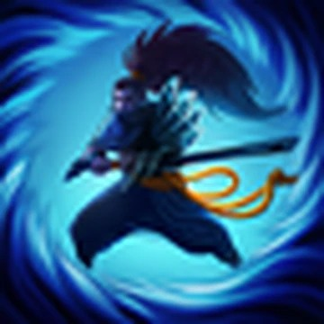
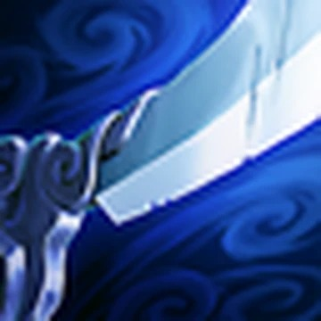

Yasuo
Yasuo, um ioniano extremamente determinado, é também um ágil espadachim que usa o próprio ar como arma para enfrentar seus inimigos. Quando jovem, ele teve seu orgulho ferido ao ser acusado injustamente do assassinato de seu mestre — sem conseguir provar sua inocência, ele foi forçado a matar o próprio irmão para se defender. Até hoje, mesmo depois do verdadeiro assassino do seu mestre ter sido revelado, Yasuo ainda não consegue se perdoar e vaga por sua terra natal com apenas o vento para guiar sua espada.
A Splash Art do campeão:
Habilidades do campeão
 Para retornar para a página principal clique aqui!